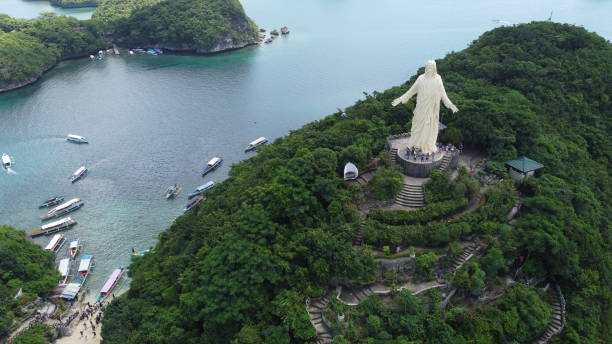

Uncover the wonders of Pangasinan
From island getaways and heritage landmarks to pilgrimage trails and eco-farms, discover a province shaped by coastline, culture, and community.
Plan your route
Choose the kind of Pangasinan experience you want first
Use these curated paths as your starting point, then keep expanding into the places that match your pace and interests.